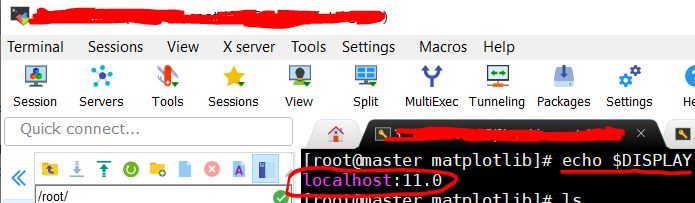
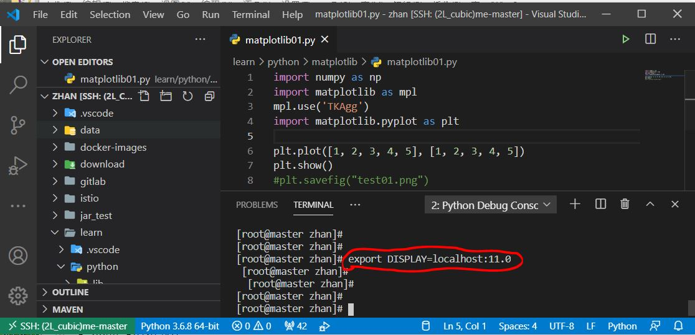

# VScode 显示远程绘图
VScode 远程连接 linux 开发，但是在 VScode 执行 plt.show () 不显示图片报如下错误，而在 linux 远程终端是可以正常显示的.
matplotlib01.py:7: UserWarning: Matplotlib is currently using agg, which is a non-GUI backend, so cannot show the figure.
plt.show()
解决方法：
# 新的解决方法
reference:
https://blog.csdn.net/zb12138/article/details/107160825
https://blog.csdn.net/qq_34846662/article/details/99051947
# windows 机器
到C:\Users\XXX\.ssh目录, 没有的话创建.
打开git bash, 输入以下命令生成公私匙, 直接回车就可以了
$ ssh-keygen -t rsa -C "这里任意输入"
会在 C:\Users\XXX.ssh 目录查看到 ** id_rsa ** 和 id_rsa.pub
打开 VScode, 选择扩展插件，安装插件 Remote X11 , 也会连带安装 Remote X11(SSH) 等插件.
# linux 远程终端
输入以下命令生成公私匙，直接回车就可以了
ssh-keygen -t rsa -C "这里任意输入"
cd /root/.ssh/
cp id_rsa.pub authorized_keys
之后把 windows 生成的 id_rsa.pub 内容追加到 authorized_keys 文件
# 回到 windows 机器
- 重启 VScode, 可以发现远程登陆到 linux 不需要再输入密码
- 启动 MobaXterm 或 Xshell (Xshell 没测试过) 软件，实践中不需要打开终端窗口，仅仅启动软件就行了.
- 测试 matplotlib
import numpy as np
import matplotlib as mpl
import matplotlib.pyplot as plt
plt.plot([1, 2, 3, 4, 5], [1, 2, 3, 4, 5])
plt.show()
plt.savefig("matplotlib/test01.png")
点击键盘 F5 或 VScode 打开的终端输入 ** python3 matplotlib.py ** 运行，能够正常显示图片，关闭图片能够正常保存图片到 matplotlib 目录
# 旧的解决方法
# Linux 服务器端
确保 ssh 服务配置中开启了 X11 转发：
$ vim /etc/ssh/sshd_config
包含类似如下内容：
X11Forwarding yes
X11DisplayOffset 10
PrintMotd no
PrintLastLog yes
TCPKeepAlive yes
- Centos
// 安装依赖包
yum -y install python3-tkinter
// 如果用的是VScode而不是终端运行matplotlib画图, 则需要安装如下包
yum -y install tk-devel tkcvs tkinter tklib
- Ubuntu
apt-get install python3-tk
apt-get install tk-dev
// 后续方法参考上面Centos设置
# Windows 开发机
确保 windows 机器开启了 OpenSSH CLient, 查看方法如下:
按下键盘 Windows 键或点击桌面左下角 -->> 点击设置 -->> 点击应用 -->> 点击管理可选功能 (Optional features) --> 查看 OpenSSH Client 是否已开启.
如果没有开启 OpenSSH 需要点击上面的添加功能 (Add a feature) 找到 OpenSSH 来开启
用 MobaXter 或 Xshell 打开一个 linux 终端 A , 输入如下命令查看此终端的 DISPLAY 变量值
$ echo $DISPLAY
localhost:11.0

VScode 在要执行 matplotlib 画图的 Terminal B 设置与刚才用打开的终端 A 相同的 DISPLAY 变量和值，如下
export DISPLAY=:11.0

之后用 VScode 开发 matplotlib 画图后要用 plt.show () 显示图片时候就会借用 MobaXter 打开 linux 终端 A 来显示图片
python 代码里引入 matplotlib 库之后要加上引入 ** TKAgg **
import matplotlib as mpl
mpl.use('TkAgg')
import matplotlib.pyplot as plt
plt.plot([1, 2, 3, 4, 5], [1, 2, 3, 4, 5])
plt.show()
plt.savefig("test01.png")
如果还是不行，看看你的 matplotlib 的版本，如果是最新的话，好像是存在一点 bug 的，推荐卸载然后重装
// 查看matplotlib包版本
pip list | grep matplotlib
// 卸载matplotlib
pip uninstall matplotlib
//这个版本比较稳定
pip install matplotlib=2.2.4